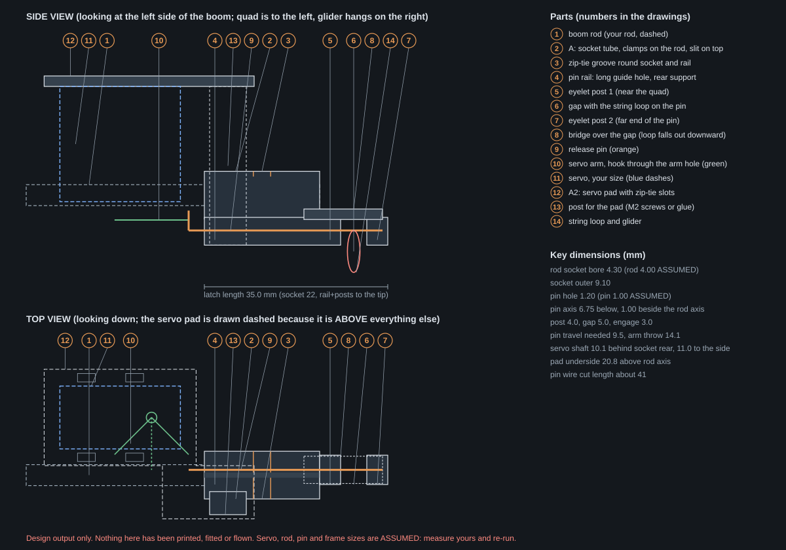

Glider drop-release for a small FPV quad
Design output only. Nothing here has been printed, fitted or flown. Every size that depends on hardware Kai has not measured (boom rod, pin wire, servo, frame arm, quad geometry) is a named, tagged parameter at the top of rigid_glider/drop_release.py. Measure yours and re-run the script; the parts, drawing, numbers and this page all regenerate.
Tags: GEOMETRY = exact from the model, ARITHMETIC = a sum from stated inputs, JUDGEMENT = a design choice made here, ASSUMED = hardware or physics not measured, UNKNOWN = not known and not modelled.
What it is
Last time an open hook under the Vapor5 let rotor downwash shake the glider off within 3 m of take-off. This concept (1) holds the glider on a light boom that sticks out forward past the front propellers, so it hangs outside the downwash column, and (2) replaces the open hook with a positive pin release: a straight wire pin slides through two printed eyelets with the glider's string loop trapped between them. A small servo pulls the pin straight back toward the quad and the loop drops out.
The servo is driven by a separate PWM radio receiver carried on the quad, so nothing in the flight controller changes. How big the downwash column is, and how calm the air is outside it, are [UNKNOWN] here and are not modelled. The boom length only sets a margin outside the propeller disc.
Assembly diagram

Print list
| Part | File | Qty | Print bounding box, mm (x y z) | Solid PLA mass each, g | Orientation / note |
|---|---|---|---|---|---|
| A_tip_latch | A_tip_latch.stl | 1 | 35.0x12.1x30.3 [GEOMETRY] | 3.21 [ARITHMETIC] | Print upright as modelled: the flat rail bottom on the bed, rod socket axis horizontal, the vertical post standing. Brim recommended (narrow footprint). UNSURE: the tall thin post and the roof of the socket bore may need tuning; no supports are designed in. |
| A2_servo_pad | A2_servo_pad.stl | 1 | 40.1x28.5x2.0 [GEOMETRY] | 1.69 [ARITHMETIC] | Print flat, as written (z = 0 is the pad underside). Screw to the post with two M2 screws or glue with CA. |
| B_frame_saddle | B_frame_saddle.stl | 2 | 16.0x22.2x5.1 [GEOMETRY] | 1.49 [ARITHMETIC] | Print flat on its base plate; rod groove faces up. Print 2. The groove has three anti-slide ribs; the side walls and the plate on top stop rotation. |
| C_rx_plate | C_rx_plate.stl | 1 | 28.0x26.0x1.6 [GEOMETRY] | 1.27 [ARITHMETIC] | Print flat. Optional; or just tape the receiver. |
Mass = voxel-union volume x 1.24 g/cm³ [ASSUMED], 100 % solid, +-2 %. A real print with 2-3 perimeters and low infill will weigh less. Weigh yours. Parts are built from overlapping solids (no shared faces) so every STL edge is shared by exactly two triangles; a slicer unions them.
Also needed, not printed: a straight pin of 1.00 mm wire [ASSUMED] about 41 mm long [ARITHMETIC], a boom rod [ASSUMED], zip ties of 2.5 mm width [ASSUMED], and optional M2 screws. Part C is trivial (a plate with zip-tie slots), so it is included; taping the receiver is also fine.
Assembly steps
- Test-fit the rod in the socket of A. The bore is 4.30 mm [GEOMETRY] for a 4.00 mm rod [ASSUMED]. If it is too tight or loose, change
bore_clear_mmand re-run. - Slide the socket onto the rod end so the rod end is flush with the front face of the socket tube. Pull a zip tie round the groove (round the tube and the rail together) and tighten. Pull-test it by hand before trusting it.
- Pass the pin through the hole in the rail from the rear to check it slides freely, then pull it back. Pin hole 1.20 mm [GEOMETRY]. Ream with a drill of that size if the print is tight.
- Zip-tie the servo to the pad A2 using the four slots (two ties round the servo body). Servo size used: 23.0 x 12.0 x 22.0 mm [ASSUMED]; the arm must end up in line with the pin. If your servo is a different size, re-run with its numbers.
- Fix the pad A2 on top of the vertical post of A with two M2 screws (1.7 mm pilot holes in the post, 2.2 mm clear holes in the pad) or glue.
- Centre the servo, fit the arm pointing across the boom, and make the pin bend (below). Hook the pin into the arm hole, then thread it through the rail, the gap and post 2.
- Zip-tie the two saddle blocks B to the frame arm or plate at about 60 mm spacing [JUDGEMENT] with the rod in the grooves, plate on top of the rod (or the same block upside down for a rod on top). Tie slots are sized for 12.0 mm arm width [ASSUMED].
- Tape or tie the PWM receiver (plate C optional) on the quad away from the servo lead tension. Route the servo lead along the boom with a loose loop and tie it down so it cannot reach a propeller.
- With the servo powered and centred by hand, set the end points so the pin travels the required distance (table below) and no further, then bench test.
The pin and the bend Kai must make
Use a straight, hard, smooth wire of 1.00 mm [ASSUMED], cut to about 41 mm [ARITHMETIC] (closed tip to the arm hole plus the leg). At the rear end make one 90 degree bend and leave a leg of about 3.8 mm [GEOMETRY] pointing up. The leg goes up through the outer hole of the servo arm from below (hole at 10.0 mm from the shaft [ASSUMED]). Then bend the last 1 to 2 mm of the leg over by about 45 degrees (or add a tiny piece of heat-shrink) so it cannot slip out of the hole. Do this with the arm already on the servo and the servo at the pin-closed end of its travel. The hooked leg ties the pin to the arm, so it cannot fall out; at the open end point the tip stays inside post 1 (retract-inside), so it is still guided, and the long rail hole plus the hooked leg stop it rotating. The arm end points, not the printed parts, set the pin travel: do not over-travel. Because the arm hole moves on an arc, the pin end swings sideways by about 2.9 mm [ARITHMETIC] over the full throw: the leg needs a loose hole and the wire a little flex. A pin too stiff to flex will bind: check on the bench.
Numbers (ARITHMETIC; assumptions stated)
Pin travel versus servo arm throw
Pin travel needed = gap + engagement + retract-inside = 5.0 + 3.0 + 1.5 = 9.5 mm [ARITHMETIC] (all three are design values [JUDGEMENT]). Arm throw at radius r and total angle θ is 2 r sin(θ/2) = 2 x 10.0 x sin(45 deg) = 14.1 mm [ARITHMETIC] with r and θ [ASSUMED]. Margin 4.6 mm. The angle you actually need is 57 deg [ARITHMETIC], so set the end points for that and the rest of the arm travel is spare. The pin rail ends 3.0 mm [JUDGEMENT] behind the arm hole's most forward position.
Pull force on the pin against friction
The glider hangs from the pin, so the pin carries the glider weight W = m g and slides against it. Pull force = μ W. Friction coefficient range 0.2 to 0.6 [ASSUMED] (string on wire plus wire in a printed hole, combined; not measured). High case also multiplied by a load/binding factor of 2.0 [JUDGEMENT].
| Glider mass, g | Weight, N | Pull, low μ, N | Pull, high μ x factor, N |
|---|---|---|---|
| 10 | 0.098 | 0.020 | 0.118 |
| 20 | 0.196 | 0.039 | 0.235 |
| 30 | 0.294 | 0.059 | 0.353 |
Servo pull at the pin = stall torque / arm radius, then x 0.3 [JUDGEMENT] usable. Stall torques below are ASSUMED round numbers for each size class, not any product's spec. Use your servo's real figure. Arm radius 10.0 mm [ASSUMED].
| Servo class | Stall torque, kg.cm | Usable pull, N | Ratio to high-case 30 g pull |
|---|---|---|---|
| 2.1 g class | 0.35 [ASSUMED] | 1.03 [ARITHMETIC] | 2.9x [ARITHMETIC] |
| 5 g class | 0.9 [ASSUMED] | 2.65 [ARITHMETIC] | 7.5x [ARITHMETIC] |
| 9 g class | 1.6 [ASSUMED] | 4.71 [ARITHMETIC] | 13.3x [ARITHMETIC] |
On these assumptions even the smallest class has margin over the friction pull. If the pin binds because of a bent pin or tight holes the margin vanishes, which is what the bench test is for.
Boom tip versus the front propeller disc
Assumed true-X frame with motor-to-motor diagonal 225 mm [ASSUMED], so each front motor sits 79.5 mm forward and 79.5 mm to the side of the centre [ARITHMETIC]. Propeller 5 inch [ASSUMED] gives a disc radius of 63.5 mm. Front disc edge = 143.0 mm forward of the centre [ARITHMETIC]. Measure the real motor spacing and re-run.
Default boom length 200 mm (rod end forward of the centre) [JUDGEMENT]. The glider hang point is 6.5 mm past the rod end [GEOMETRY], i.e. 206.5 mm forward of the centre. That is 63.5 mm beyond the front disc edge [ARITHMETIC], against the required margin of 60 mm [JUDGEMENT]. The shortest boom that meets the margin is 196.5 mm [ARITHMETIC]. The rod passes 11.5 mm clear of each front disc sideways [ARITHMETIC], and the servo pad corners are 26.7 mm clear of the disc [ARITHMETIC]. The size of the downwash column and how calm the air outside it is are [UNKNOWN] and not modelled; the margin is a judgement, not a result. The hanging glider's own length behind the hang point is [UNKNOWN] here: check it clears the props.
Added mass and balance
Quad mass 650 g [ASSUMED] with its centre of gravity taken at the frame centre [ASSUMED]. Everything below is measured forward of that point. CG shift = sum(m x) / total mass. Part masses are the solid-PLA estimates above, rod 1.6 g/cm³ hollow tube [ASSUMED], pin steel, plus 2.0 g receiver [ASSUMED] and 1.5 g ties/tape [ASSUMED].
| Item | Mass, g | Position, mm forward of centre |
|---|---|---|
| boom rod | 2.02 [ARITHMETIC] | 85 [ARITHMETIC] |
| tip latch (A) | 3.21 [ARITHMETIC] | 189 [ARITHMETIC] |
| servo pad (A2) | 1.69 [ARITHMETIC] | 166 [ARITHMETIC] |
| release pin | 0.25 [ARITHMETIC] | 194 [ARITHMETIC] |
| 2 frame saddles (B) | 2.99 [ARITHMETIC] | 10 [ARITHMETIC] |
| receiver + plate (C) | 3.27 [ARITHMETIC] | 0 [ARITHMETIC] |
| zip ties / tape | 1.50 [ARITHMETIC] | 0 [ARITHMETIC] |
| servo (class below) | by class | 162 [ARITHMETIC] |
| glider on the hook | 10 / 20 / 30 | 206 [ARITHMETIC] |
| Servo class (mass) | Hardware mass, g | CG shift, no glider, mm | CG shift, 10 g glider | 20 g | 30 g |
|---|---|---|---|---|---|
| 2.1 g class (2.1 g [ASSUMED]) | 17.0 | 2.2 | 5.2 | 8.2 | 11.0 |
| 5 g class (5.0 g [ASSUMED]) | 19.9 | 2.9 | 5.9 | 8.8 | 11.6 |
| 9 g class (9.0 g [ASSUMED]) | 23.9 | 3.9 | 6.8 | 9.7 | 12.5 |
All shifts are forward, ARITHMETIC. With the 9.0 g servo and a 30 g glider the pitching moment about the centre is 86 N.mm; when the glider is released the CG jumps back by 8.6 mm [ARITHMETIC]. Whether the quad can take that without re-balancing the battery is for Kai to judge; it depends on the real quad mass and CG, both [ASSUMED]. A forward-shifted battery or a rear counterweight is the usual remedy; none is designed here.
Wiring and radio setup: checklist to confirm
This is a list of things to check against your own receiver's documentation. It is not a verified procedure and none of it has been tested.
- A second ExpressLRS receiver with PWM outputs, bound with the same binding phrase, responds to the same transmitter as the quad's own receiver. (confirm in your receiver's docs)
- Telemetry is disabled on the extra receiver, so two receivers do not both transmit back to the radio. (confirm in your receiver's docs)
- Channel 5 is the ELRS arming channel on the usual setup, so the servo goes on a different AUX channel that has a spare switch on the radio. Check which channel numbers your receiver maps to which pin. (confirm in your receiver's docs)
- Power: take 5 V from a pad whose BEC current rating covers the servo's peak current plus whatever else it feeds. Small servos preferred. Check the rating, and check the receiver's own supply range. (confirm in your receiver's docs)
- Set the PWM receiver's failsafe for that channel to the pin-CLOSED position, so a lost link holds the glider rather than dropping it. (confirm in your receiver's docs)
Pre-flight checklist
- Bench test the release 10 times in a row with a dummy weight of the heaviest glider mass (30 g) hanging on the string loop. Every release must be clean; the pin must slide back without sticking.
- Check the propellers clear the boom, the string and the hanging glider at full stick deflection (all axes, props spinning is NOT part of this check: props off).
- Failsafe check on the bench (props off): turn the transmitter off and confirm the pin stays closed (hold), not released.
- Check the rod cannot slide or rotate in the socket and the saddles under hand loading; check zip ties are tight and the tails trimmed.
- Check the servo lead and the pin hook cannot catch on a propeller.
- Weigh the quad with everything fitted; check the balance (CG) against the numbers above before flying.
- Dummy drop before a real glider: fly with a dummy weight and release it over soft ground.
- Fly gently with a slight forward drift. Release in a steady hover or in slow forward flight, not during a manoeuvre.
String loop (JUDGEMENT): a loop about 25 mm long [JUDGEMENT] tied from a thin, smooth, low-stretch braided line (about 0.3 to 0.5 mm; polyester or fishing-braid thread), knot dabbed with glue, tied through the glider's release hole or nose. Avoid stiff or kinked monofilament that can jam in the gap. The gap is 5.0 mm [JUDGEMENT] so a small knot and two strands fit. No stiff eye on the glider is needed.
Assumed or unknown: measure yours and re-run
The script accepts the main ones as flags; any other parameter can be edited at the top of the script.
| Parameter | Default used | Unit | Tag | What to measure | Re-run flag |
|---|---|---|---|---|---|
rod_d_mm | 4 | mm | ASSUMED | Boom rod OUTER diameter. Kai's rod is unknown. Measure with calipers. | --rod-d |
rod_wall_mm | 0.5 | mm | ASSUMED | Boom rod wall thickness (mass estimate only; tube assumed hollow carbon). | edit PARAMS |
pin_d_mm | 1 | mm | ASSUMED | Release pin wire diameter (straight, hard, smooth wire). Measure it. | --pin-d |
servo_l_mm | 23 | mm | ASSUMED | Servo body length (the long side, not counting mounting ears). Measure your servo. | --servo-l |
servo_w_mm | 12 | mm | ASSUMED | Servo body width (short side). | --servo-w |
servo_h_mm | 22 | mm | ASSUMED | Servo body height along the output shaft, base to the face the arm sits on. | --servo-h |
servo_mass_g | 9 | g | ASSUMED | Servo mass used for the mass and CG sums (the 9 g class is the worst case). | edit PARAMS |
servo_shaft_from_end_mm | 5.5 | mm | ASSUMED | Output shaft centre to the near end of the body, along the length. | edit PARAMS |
servo_arm_below_body_mm | 3.5 | mm | ASSUMED | Arm mid-plane to the servo body face it hangs below. | edit PARAMS |
servo_arm_thick_mm | 1.6 | mm | ASSUMED | Servo arm thickness. | edit PARAMS |
servo_arm_radius_mm | 10 | mm | ASSUMED | Distance from the shaft centre to the arm hole the pin hook goes through. | edit PARAMS |
servo_throw_deg | 90 | deg | ASSUMED | Arm angle you will set between pin-closed and pin-open end points (servo must be able to do it). | edit PARAMS |
frame_arm_w_mm | 12 | mm | ASSUMED | Width of the frame arm / plate the saddle blocks clamp to. Vapor5 frame is UNKNOWN here. | edit PARAMS |
rx_l_mm | 22 | mm | ASSUMED | PWM receiver length (for the optional receiver plate). | edit PARAMS |
rx_w_mm | 12 | mm | ASSUMED | PWM receiver width. | edit PARAMS |
rx_mass_g | 2 | g | ASSUMED | PWM receiver mass. | edit PARAMS |
zip_tie_w_mm | 2.5 | mm | ASSUMED | Zip tie width. Slots are cut for this; measure your ties. | edit PARAMS |
zip_tie_t_mm | 1 | mm | ASSUMED | Zip tie thickness. | edit PARAMS |
quad_mass_g | 650 | g | ASSUMED | Quad all-up mass with battery, for the CG-shift sums. Weigh it. | edit PARAMS |
motor_diag_mm | 225 | mm | ASSUMED | Motor-to-motor DIAGONAL distance (true-X). Measure the Vapor5; frame geometry is UNKNOWN here. | edit PARAMS |
prop_d_in | 5 | in | ASSUMED | Propeller diameter. | edit PARAMS |
boom_rear_x_mm | -30 | mm | ASSUMED | Where the rod starts, measured forward of the quad centre (negative = behind the centre). | edit PARAMS |
boom_length_mm | 200 | mm | JUDGEMENT | Rod END measured forward of the quad centre. Default puts the glider hang point past the front prop edge by the margin below. | --boom-length |
- Size of the downwash column and how calm the air outside it is: UNKNOWN, not modelled.
- Vapor5 frame dimensions, arm width and mounting holes: UNKNOWN.
- Servo models and dimensions (2.1 g, 5 g, 9 g): UNKNOWN. Stall torques in the table are ASSUMED round numbers.
- Friction between the string, the pin and the printed holes: ASSUMED range only.
- Whether the PLA parts print and assemble as drawn (bore fit, tie groove strength, the thin tall post, the bridging over the pin gap): UNKNOWN until printed.
- Nothing here has been printed, fitted or flown.
All parameters
| Name | Value | Unit | Tag | Note |
|---|---|---|---|---|
rod_d_mm | 4.0 | mm | [ASSUMED] | Boom rod OUTER diameter. Kai's rod is unknown. Measure with calipers. |
rod_wall_mm | 0.5 | mm | [ASSUMED] | Boom rod wall thickness (mass estimate only; tube assumed hollow carbon). |
pin_d_mm | 1.0 | mm | [ASSUMED] | Release pin wire diameter (straight, hard, smooth wire). Measure it. |
servo_l_mm | 23.0 | mm | [ASSUMED] | Servo body length (the long side, not counting mounting ears). Measure your servo. |
servo_w_mm | 12.0 | mm | [ASSUMED] | Servo body width (short side). |
servo_h_mm | 22.0 | mm | [ASSUMED] | Servo body height along the output shaft, base to the face the arm sits on. |
servo_mass_g | 9.0 | g | [ASSUMED] | Servo mass used for the mass and CG sums (the 9 g class is the worst case). |
servo_shaft_from_end_mm | 5.5 | mm | [ASSUMED] | Output shaft centre to the near end of the body, along the length. |
servo_arm_below_body_mm | 3.5 | mm | [ASSUMED] | Arm mid-plane to the servo body face it hangs below. |
servo_arm_thick_mm | 1.6 | mm | [ASSUMED] | Servo arm thickness. |
servo_arm_radius_mm | 10.0 | mm | [ASSUMED] | Distance from the shaft centre to the arm hole the pin hook goes through. |
servo_throw_deg | 90.0 | deg | [ASSUMED] | Arm angle you will set between pin-closed and pin-open end points (servo must be able to do it). |
frame_arm_w_mm | 12.0 | mm | [ASSUMED] | Width of the frame arm / plate the saddle blocks clamp to. Vapor5 frame is UNKNOWN here. |
rx_l_mm | 22.0 | mm | [ASSUMED] | PWM receiver length (for the optional receiver plate). |
rx_w_mm | 12.0 | mm | [ASSUMED] | PWM receiver width. |
rx_mass_g | 2.0 | g | [ASSUMED] | PWM receiver mass. |
zip_tie_w_mm | 2.5 | mm | [ASSUMED] | Zip tie width. Slots are cut for this; measure your ties. |
zip_tie_t_mm | 1.0 | mm | [ASSUMED] | Zip tie thickness. |
quad_mass_g | 650.0 | g | [ASSUMED] | Quad all-up mass with battery, for the CG-shift sums. Weigh it. |
motor_diag_mm | 225.0 | mm | [ASSUMED] | Motor-to-motor DIAGONAL distance (true-X). Measure the Vapor5; frame geometry is UNKNOWN here. |
prop_d_in | 5.0 | in | [ASSUMED] | Propeller diameter. |
boom_rear_x_mm | -30.0 | mm | [ASSUMED] | Where the rod starts, measured forward of the quad centre (negative = behind the centre). |
boom_length_mm | 200.0 | mm | [JUDGEMENT] | Rod END measured forward of the quad centre. Default puts the glider hang point past the front prop edge by the margin below. |
bore_clear_mm | 0.3 | mm | [JUDGEMENT] | Rod socket diameter = rod diameter + this (printed holes run small). Tune after a test print. |
socket_wall_mm | 2.4 | mm | [JUDGEMENT] | Socket tube wall (6 perimeters of 0.4 mm). |
slit_mm | 1.0 | mm | [JUDGEMENT] | Clamp slit width along the top of the socket. |
socket_len_mm | 22.0 | mm | [JUDGEMENT] | Socket length (rod insertion depth). |
tie_groove_depth_mm | 1.0 | mm | [JUDGEMENT] | Depth of the zip-tie groove round socket and rail. |
pin_clear_mm | 0.2 | mm | [JUDGEMENT] | Pin hole diameter = pin wire diameter + this. |
post_t_mm | 4.0 | mm | [JUDGEMENT] | Thickness of each eyelet post along the pin. |
gap_mm | 5.0 | mm | [JUDGEMENT] | Gap between the two eyelet posts (the string loop sits here). |
engage_mm | 3.0 | mm | [JUDGEMENT] | Pin tip depth inside the far post when closed. |
retract_inside_mm | 1.5 | mm | [JUDGEMENT] | When open, pin tip is pulled back this far INTO the near post (still guided). |
bridge_clear_mm | 1.5 | mm | [JUDGEMENT] | Space between the pin and the underside of the bridge over the gap. |
bridge_t_mm | 2.0 | mm | [JUDGEMENT] | Bridge thickness. |
hook_clear_mm | 3.0 | mm | [JUDGEMENT] | Clearance between the rear end of the pin rail and the arm hole at its most forward position. |
servo_rod_gap_mm | 3.0 | mm | [JUDGEMENT] | Free space between the rod and the servo side face (room for the zip tie). |
pad_t_mm | 2.0 | mm | [JUDGEMENT] | Servo pad plate thickness. |
post_len_mm | 7.0 | mm | [JUDGEMENT] | Length (along the boom) of the vertical post carrying the servo pad. |
post_w_mm | 4.4 | mm | [JUDGEMENT] | Width of the vertical post. |
saddle_len_mm | 16.0 | mm | [JUDGEMENT] | Length of each frame saddle block along the rod. |
saddle_rib_h_mm | 0.4 | mm | [JUDGEMENT] | Height of the anti-slide ribs in the saddle groove. |
saddle_spacing_mm | 60.0 | mm | [JUDGEMENT] | Spacing between the two saddle blocks along the rod. |
prop_margin_mm | 60.0 | mm | [JUDGEMENT] | Hang point must be at least this far forward of the front prop disc edge. Downwash column size is UNKNOWN and not modelled. |
loop_len_mm | 25.0 | mm | [JUDGEMENT] | String loop length (flat, knot to end) from glider nose attachment. |
mu_lo | 0.2 | [ASSUMED] | Low combined friction coefficient (string on wire plus wire in printed hole). | |
mu_hi | 0.6 | [ASSUMED] | High combined friction coefficient. | |
load_factor | 2.0 | [JUDGEMENT] | Extra factor on the hanging weight for binding / gentle manoeuvre load. | |
usable_torque_frac | 0.3 | [JUDGEMENT] | Fraction of stall torque treated as usable continuous pull. | |
pla_density_g_cm3 | 1.24 | g/cm3 | [ASSUMED] | PLA density, 100 % solid. Weigh your prints. |
pin_density_g_cm3 | 7.85 | g/cm3 | [ASSUMED] | Pin wire density (steel). |
rod_density_g_cm3 | 1.6 | g/cm3 | [ASSUMED] | Rod material density (carbon tube). |
misc_mass_g | 1.5 | g | [ASSUMED] | Zip ties and tape on the whole assembly, placed at the quad centre. |
socket_bore_d_mm | 4.3 | mm | [GEOMETRY] | Rod socket bore diameter = rod_d + bore_clear. |
socket_outer_d_mm | 9.1 | mm | [GEOMETRY] | Socket outer diameter. |
pin_hole_d_mm | 1.2 | mm | [GEOMETRY] | Pin hole diameter = pin_d + pin_clear. |
pin_axis_z_mm | -6.75 | mm | [GEOMETRY] | Pin axis below the rod axis. |
pin_axis_y_mm | 1.0 | mm | [GEOMETRY] | Pin axis sideways offset from the rod axis (so the servo clears the rod). |
rail_width_mm | 5.6 | mm | [GEOMETRY] | Pin rail / eyelet post width. |
servo_shaft_x_mm | -10.071 | mm | [GEOMETRY] | Servo shaft x relative to socket rear face (socket starts at x=0, tip forward). |
servo_shaft_y_mm | 11.0 | mm | [GEOMETRY] | Servo shaft y. |
pad_underside_z_mm | 20.75 | mm | [GEOMETRY] | Underside of the servo pad plate. |
pin_cut_length_mm | 40.8 | mm | [GEOMETRY] | Straight wire to cut: closed tip to the hook, plus the hook leg. |
pin_hook_leg_mm | 3.8 | mm | [GEOMETRY] | Length of the 90-degree bent leg that goes through the arm hole. |
pin_travel_required_mm | 9.5 | mm | [ARITHMETIC] | gap + engage + retract_inside. |
arm_throw_mm | 14.142 | mm | [ARITHMETIC] | 2 r sin(theta/2). |
arm_angle_required_deg | 56.719 | deg | [ARITHMETIC] | 2 asin(travel / 2r). |
prop_edge_x_mm | 143.05 | mm | [ARITHMETIC] | Front prop disc edge forward of the quad centre (motor geometry ASSUMED). |
hang_point_x_mm | 206.5 | mm | [ARITHMETIC] | Glider hang point forward of the quad centre. |
hang_margin_mm | 63.45 | mm | [ARITHMETIC] | Hang point minus front prop disc edge. |
boom_length_min_mm | 196.55 | mm | [ARITHMETIC] | Smallest boom_length that meets prop_margin. |
mass_A_tip_latch_g | 3.209 | g | [ARITHMETIC] | Solid PLA estimate, voxel union (+-2 %). |
bbox_A_tip_latch_mm | 35.0x12.1x30.3 | mm | [ARITHMETIC] | Print bounding box as written to the STL. |
mass_A2_servo_pad_g | 1.69 | g | [ARITHMETIC] | Solid PLA estimate, voxel union (+-2 %). |
bbox_A2_servo_pad_mm | 40.1x28.5x2.0 | mm | [ARITHMETIC] | Print bounding box as written to the STL. |
mass_B_frame_saddle_g | 1.493 | g | [ARITHMETIC] | Solid PLA estimate, voxel union (+-2 %). |
bbox_B_frame_saddle_mm | 16.0x22.2x5.1 | mm | [ARITHMETIC] | Print bounding box as written to the STL. |
mass_C_rx_plate_g | 1.269 | g | [ARITHMETIC] | Solid PLA estimate, voxel union (+-2 %). |
bbox_C_rx_plate_mm | 28.0x26.0x1.6 | mm | [ARITHMETIC] | Print bounding box as written to the STL. |
Same table as parameters.csv.